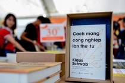

Số lượng xuất bản phẩm phát hành và doanh thu sụt giảm nghiêm trọng. Các đợt giãn cách khiến một số nhà sách phải đóng cửa hoặc thu hẹp quy mô. Hiện tượng in và phát hành sách lậu chưa được khắc phục kịp thời.
Trước những tồn đọng trên, bước sang thềm năm mới 2022, người làm sách đề xuất một số biện pháp và dự báo tình hình xuất bản trong thời gian tới, một mặt nhằm khắc phục tồn đọng, mặt khác tạo ra điểm sáng cho toàn ngành.
